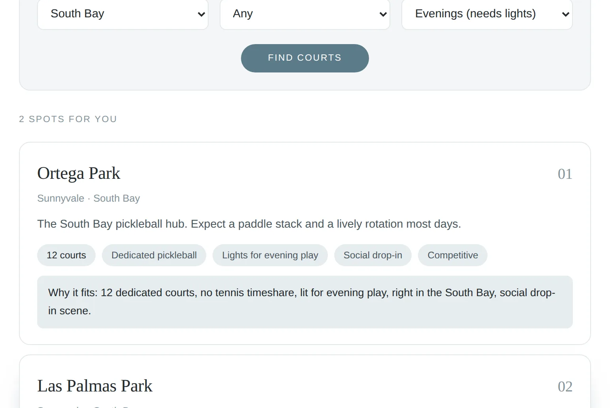

The answer to "where can we play tonight?"
Pickleball courts in the Bay fill up fast, and the real questions are always the same: how many courts are there, are they dedicated or shared with tennis, and do they have lights? I pulled together the outdoor spots I know from SF to San Jose and built a finder around exactly those questions. Pick a part of the Bay, a court type, and when you play, and it ranks the best options with a reason for each.
Highlights
- Tracks 10 parks and 64 outdoor courts across SF, the East Bay, South Bay, and Peninsula
- Shows the court count for every spot, so you know how long the wait might be
- Separates dedicated pickleball courts from lines painted on tennis courts
- Evening filter surfaces only the spots with lights
- Describes each spot's scene: social drop-in, competitive, or beginner friendly
Examples
A real search: evening play in the South Bay, ranked with court counts and a reason for each pick.

Live demo
Fully working: pick where you are, the court type, and when you play below.